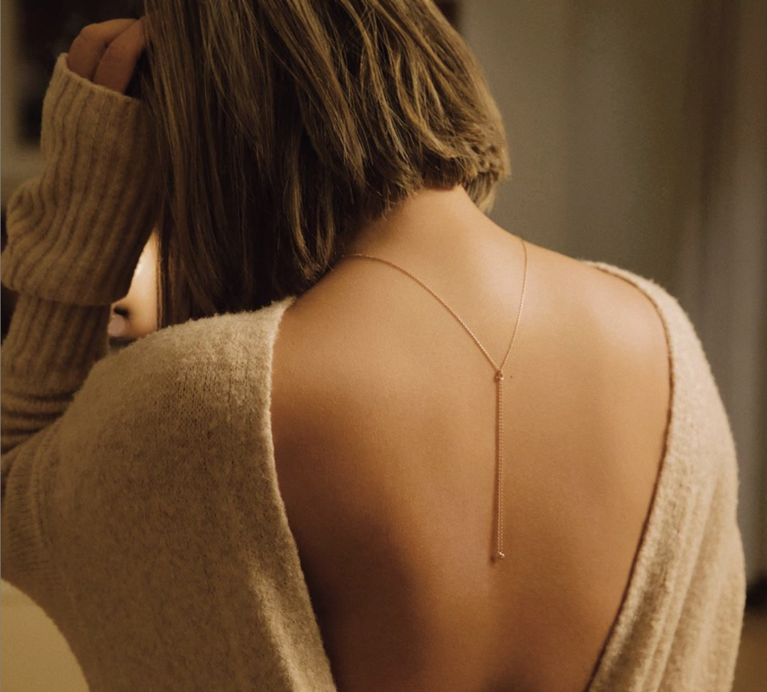

“WHAT JEWELRY SHOULD YOU BE WEARING
TO BOOST SELF CONFIDENCE"

Self-esteem is essential to daily life. The way you think of yourself affects your attitude and happiness. Improving your confidence in yourself, will improve your self-esteem and in return, improve your happiness. Yes, jewelry is one way to do just that. It can improve your outlook on yourself or even the world. It allows you to do what you want and be who you want to be. You don’t have to rely on the opinions of others. And as much as we write about current trends, you absolutely don’t have to follow them. Be independent. Be spontaneous. Be confident. Wear those outrageous earrings that make you feel like a goddess, because that is all that counts. How YOU feel about YOU
TAKE THE QUIZ
See Results Immediately!